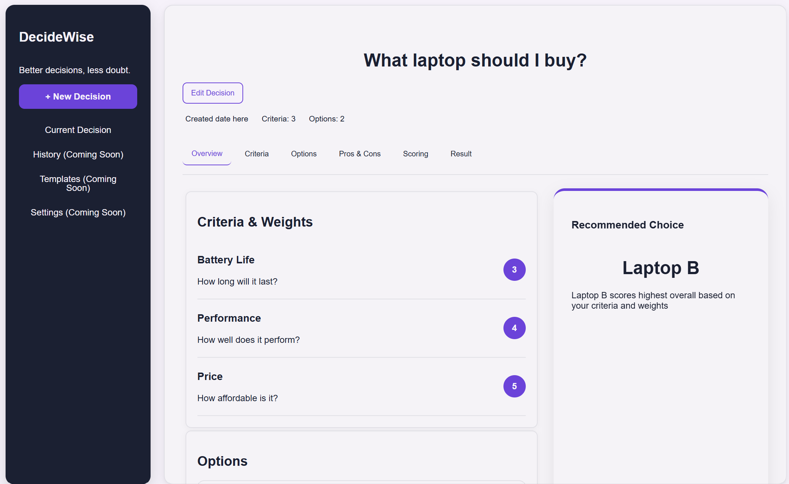
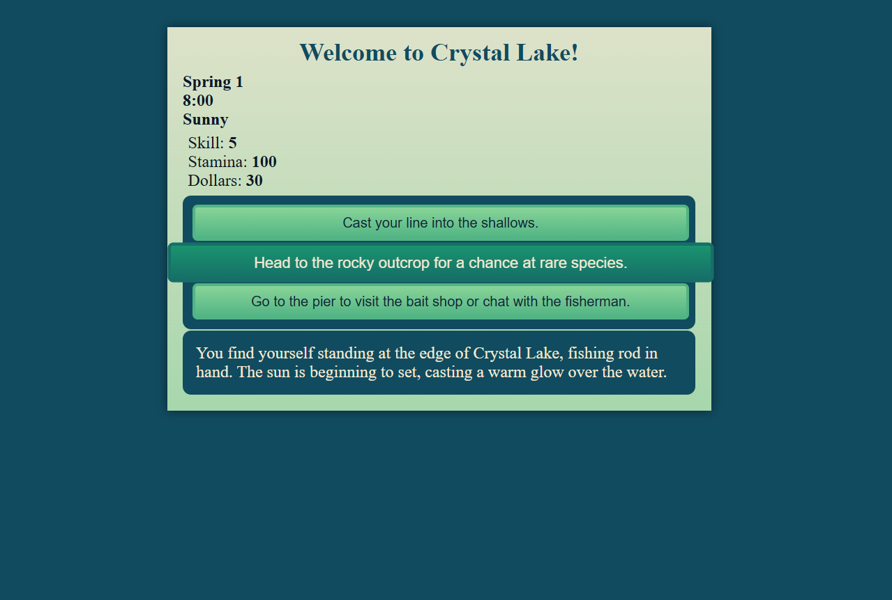
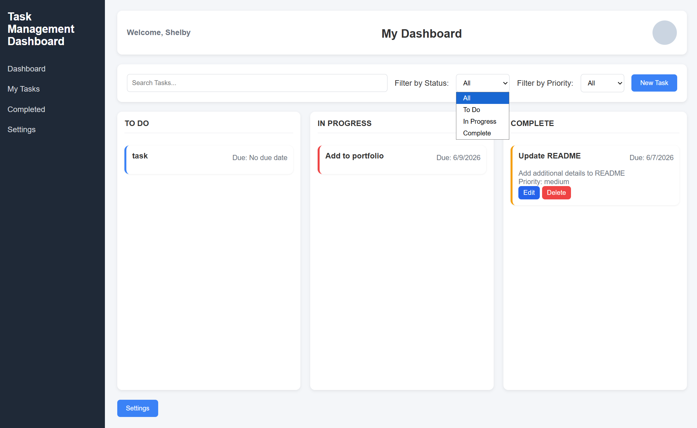
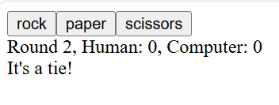
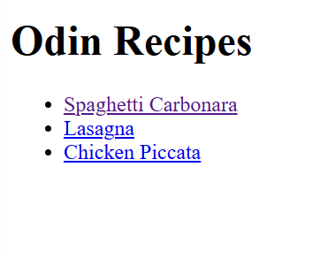

Currently completing a Full Stack Development curriculum while building personal projects with HTML, CSS, JavaScript, Python, and C#.
I'm an aspiring software engineer with certifications in Responsive Web Design and JavaScript. I enjoy solving problems, building applications, and continuously improving my development skills.
Currently studying full stack development and expanding my knowledge of APIs, databases, backend development, and modern software engineering practices.

DecisionWise
HTML • CSS • Elm
An interactive decision-making tool built with Elm that uses weighted criteria and scoring to help users choose the best option. Still in-progress to add more features.

Rivers & Reels
HTML • CSS • JavaScript
Designed and developed a browser-based fishing game featuring a dynamic state-management system, progression mechanics, weather and time simulation, inventory management, and randomized encounters. Refactored core systems using centralized game state objects and reusable functions to improve maintainability and reduce duplicated code.

Task Management Dashboard
HTML • CSS • JavaScript
A responsive task management application built with HTML, CSS, and JavaScript that allows users to create, organize, and track tasks by status and priority. Features include task persistence using LocalStorage, expandable task cards, priority-based visual indicators, user onboarding with personalized dashboard settings, and a responsive interface optimized for desktop and mobile devices.

Rock Paper Scissors
HTML • CSS • JavaScript
Interactive JavaScript game featuring score tracking, randomized computer moves, and DOM manipulation.

Recipe Website
HTML
Multi-page website built with semantic HTML and internal navigation to demonstrate foundational web development skills.
I'm actively developing new projects and looking for opportunities to grow as a software engineer.